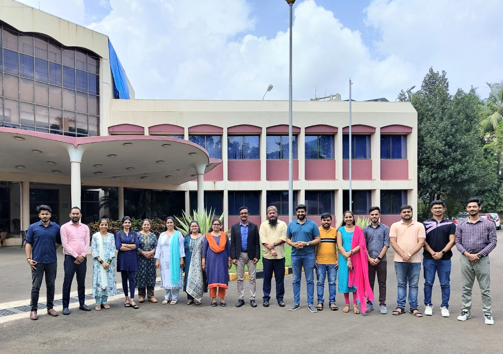

Dr CP Johnson Sir
" There is no future without teacher. , The CDAC Senior Director "

CP Johnson Sir with Team
🔂 Small Message To Sir 🔂
Your unwavering dedication and passion for teaching have ignited a fire of inspiration within me. Your guidance has shown me the power of knowledge and the impact a caring mentor can have. Thank you for being a shining example of what it means to inspire and uplift others.
- 1990Completed BSC from University of Calicut.
- 1992Completed MSC from Indian Institute of Technology, Bombay.
- 1994Completed MTech from Indian Institute of Technology, Bombay.
- 1998Completed PhD from Indian Institute of Technology, Bombay and also Awarded Dr KS Krishnan Research Fellowship of the Department of Atomic Energy for doing full-time PhD in IIT Bombay.
- 1998Join Head (GIS & Remote Sensing Unit)
- 1999Join Centre for Development of Advanced Computing (CDAC) As Project Leader.
- 2007Centre for Development of Advanced Computing (CDAC) Promoted as Joint Director
- 2008Join C-DAC School of Advanced Computing, as Director.
- 2011Join Centre for Development of Advanced Computing (CDAC) as Joint Director (Business Development)
- 2011Join Centre for Development of Advanced Computing (CDAC) as Joint Director (Education & Training)
- 2013Join Centre for Development of Advanced Computing (CDAC) as Associate Director
-
2020Join Centre for Development of Advanced
Computing (CDAC) as Senior Director.
Education & Training at CDAC Mumbai. Chairman of the Management Committee and Placements of C-DAC Mentor, inspiring young minds to accomplish their dreams.